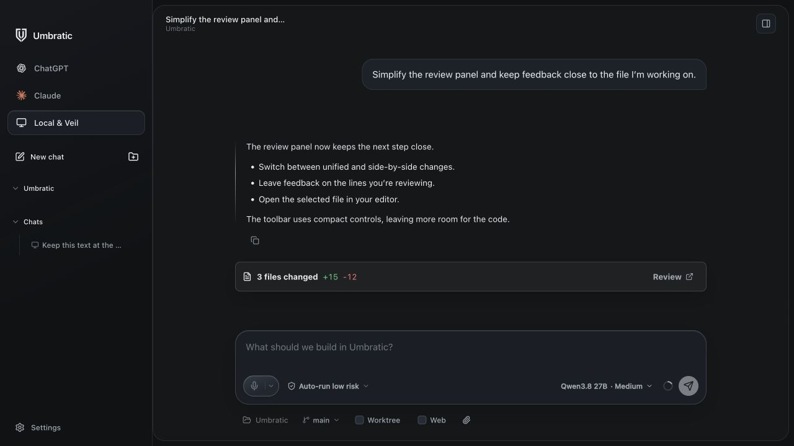

My everyday
AI workspace
A personal project that became the place I build everything else. Code, files, documents, and the conversation in one workspace.
Explore UmbraticCreator & Engineer 2025 – present
- One interface, your choice of model
- An Electron and React desktop with a Rust agent runtime and Go gateway for local and self-hosted models. Codex and Claude Code integrations connect cloud workspaces.
- Built to keep you involved
- Steer a running task, queue what comes next, review changes, and leave feedback directly on the file.
Inside the engineering
The Rust agent harness coordinates parallel tools, serializes conflicting work, compacts context, and restores saved conversations. Permission checks govern workspace operations; team-filtered retrieval and device revocation control access through the Go services. Cloud integrations retain their providers’ native execution and approval behavior.
View code review